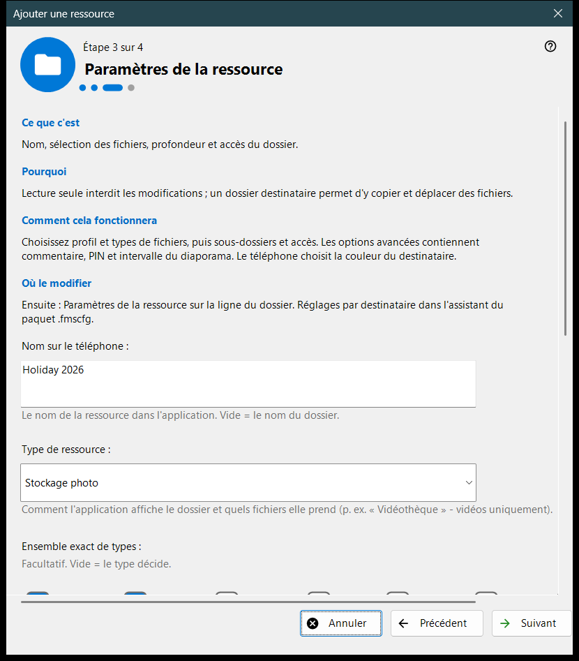
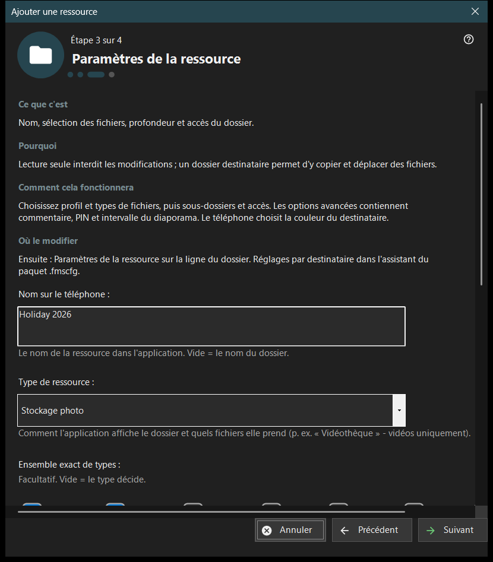

Ajouter une ressource
Objectif
Un court assistant qui ajoute une ressource partagée : un dossier ou un disque FileDO déjà ouvert. Il s'ouvre depuis l'élément «Assistant d'ajout de ressource..» du menu Ajouter.. et depuis le parcours du premier démarrage, et se termine en ajoutant la ressource à la liste de partage.


Dans cet ordre
- Lisez ce qu'est une ressource et appuyez sur «Suivant».
- Appuyez sur «Choisir un dossier..» et choisissez le dossier.
- Réglez le nom, le type et l'accès sur la page «Paramètres de la ressource».
- Vérifiez le récapitulatif et appuyez sur «Terminer».
- Utilisez les boutons de la dernière page pour afficher le code QR ou ouvrir les paramètres.
Les éléments
Ce qu'est une ressource
Une ressource est un dossier ou un disque virtuel FileDO ouvert que la visionneuse atteint par ce PC. Les fichiers restent sur l'ordinateur ; le téléphone les parcourt et les copie par la connexion, et un dossier coché dans la liste est celui qui est servi.
Choisir un dossier
«Choisir un dossier..» ouvre le sélecteur de dossier habituel et «Disques FileDO..» liste les disques ouverts. Un dossier déjà présent dans la liste est refusé avec «Ce dossier est déjà dans la liste.» Choisissez des disques FileDO déjà ouverts ; l'assistant ne les crée ni ne les monte.
Paramètres de la ressource
Le nom sur le téléphone, le type, l'ensemble exact de médias, les conditions d'analyse et l'accès. «Lecture seule» interdit les modifications ; un dossier de destination permet d'y copier et d'y déplacer des fichiers. «Options avancées» contiennent le commentaire, le code PIN et l'intervalle du diaporama. La couleur de la destination est choisie par le téléphone.
Ressource et actions suivantes
«Terminer» enregistre les réglages et ajoute la ressource ; jusque-là, annuler ne change rien. La dernière page indique si la ressource est servie. Si le serveur est arrêté, le téléphone ne la voit pas encore ; si le service n'est pas confirmé, vérifiez les réglages. «Afficher le code QR» ouvre le code d'accès, «Paramètres..» les paramètres du gestionnaire et «Fermer» quitte l'assistant.
Paramètres du gestionnaire · Paramètres de partage SFTP · Paramètres du serveur d’échange